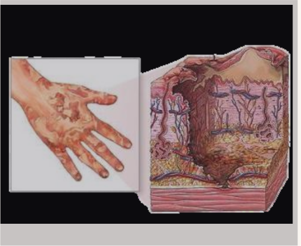

Quemaduras graves

Las quemaduras graves son lesiones extensas o profundas de la piel y tejidos subyacentes que comprometen una gran superficie corporal o afectan estructuras críticas, poniendo en riesgo la vida del paciente. Estas quemaduras pueden involucrar la destrucción total de la epidermis, dermis, tejido subcutáneo, músculo e incluso hueso.
- La lesión térmica provoca destrucción celular directa y daño vascular, alterando la barrera cutánea y desencadenando una respuesta inflamatoria sistémica.
- La pérdida de la barrera cutánea facilita la entrada de microorganismos y la pérdida de líquidos, electrolitos y proteínas, generando deshidratación y choque hipovolémico.
- La liberación masiva de mediadores inflamatorios puede causar síndrome de respuesta inflamatoria sistémica (SIRS) y fallo multiorgánico.
- La necrosis muscular puede liberar mioglobina, que puede dañar los riñones si no se diluye adecuadamente con líquidos.
- La formación de escaras rígidas puede comprometer la circulación y respiración, requiriendo escarotomía para liberar presión.
- Las quemaduras graves representan una proporción menor de todas las quemaduras, pero con alta morbilidad y mortalidad.
- Afectan principalmente a hombres jóvenes y adultos en edad laboral.
- Las causas más frecuentes incluyen fuego, líquidos calientes, productos químicos, electricidad y radiación.
- La mortalidad depende de la extensión, profundidad, edad, comorbilidades y calidad del tratamiento.
- Quemaduras de espesor total o parcial profundo que afectan más del 10% de la superficie corporal total (SCT) en adultos o más del 5% en niños.
- Piel carbonizada, blanca, negra o roja fija, sin sensibilidad en áreas profundas.
- Dolor intenso en zonas con tejido viable.
- Edema local y sistémico.
- Signos de choque hipovolémico: hipotensión, taquicardia, palidez.
- Dificultad respiratoria si hay quemaduras en cara, cuello o inhalación de humo.
- Formación de ampollas, necrosis y riesgo de infección.
| Intervención | Descripción | Vía de administración | Frecuencia / Duración | Notas |
|---|---|---|---|---|
| Reposición de líquidos | Administración masiva de líquidos intravenosos según fórmula de Parkland para prevenir choque hipovolémico | Intravenosa | Inmediata y continua | Fundamental para evitar insuficiencia renal y choque. |
| Control de la vía aérea | Oxígeno suplementario y, si es necesario, intubación para asegurar ventilación en quemaduras faciales o inhalación de humo | Inhalatoria / Intubación | Según necesidad | Previene insuficiencia respiratoria. |
| Analgesia | Opioides (morfina, fentanilo) para control del dolor intenso | IV / IM / Oral | Según necesidad | El dolor puede ser muy intenso, especialmente durante cambios de apósitos. |
| Limpieza y desbridamiento | Retiro de tejido necrótico y limpieza de la herida para prevenir infección | Quirúrgica / Ambulatoria | Según evolución | Facilita la cicatrización y reduce riesgo de sepsis. |
| Apósitos y ungüentos tópicos | Sulfadiazina de plata, bacitracina o apósitos especiales que protegen y controlan infección | Tópica | Diario o según indicación | Algunos apósitos permiten evacuación de líquidos y control bacteriano. |
| Escarotomía | Incisión quirúrgica para liberar presión en extremidades o tórax cuando la escara compromete circulación o respiración | Quirúrgica | Según indicación | Evita síndrome compartimental y falla respiratoria. |
| Cirugía reconstructiva | Injertos de piel autólogos o dermis artificial para cubrir áreas extensas o profundas | Quirúrgica | Según evolución | Mejora la cicatrización y función, reduce hospitalización. |
| Prevención y tratamiento de infecciones | Antibióticos sistémicos si hay infección confirmada o sospechada | IV / Oral | Según indicación | No se recomienda profilaxis antibiótica rutinaria. |
| Vacunación | Vacuna antitetánica | IM | Según esquema | Previene tétanos, especialmente en quemaduras profundas. |
| Soporte nutricional | Nutrición enteral o parenteral para cubrir demandas metabólicas elevadas | Enteral / IV | Continuo | Fundamental para la recuperación y cicatrización. |
| Fisioterapia y terapia ocupacional | Ejercicios para mantener movilidad y función articular | Física / Ocupacional | Según evolución | Previene contracturas y mejora recuperación funcional. |
- Enfriar la quemadura con agua tibia para detener el daño térmico, evitando el uso de hielo.
- Retirar ropa y objetos que puedan retener calor.
- Evaluar y asegurar vía aérea, respiración y circulación.
- Iniciar reposición hídrica intravenosa precoz.
- Control del dolor y traslado a centro especializado si es necesario.
- Infección local y sepsis.
- Insuficiencia renal por mioglobinuria.
- Síndrome compartimental.
- Cicatrices hipertróficas y contracturas.
- Problemas metabólicos y nutricionales.